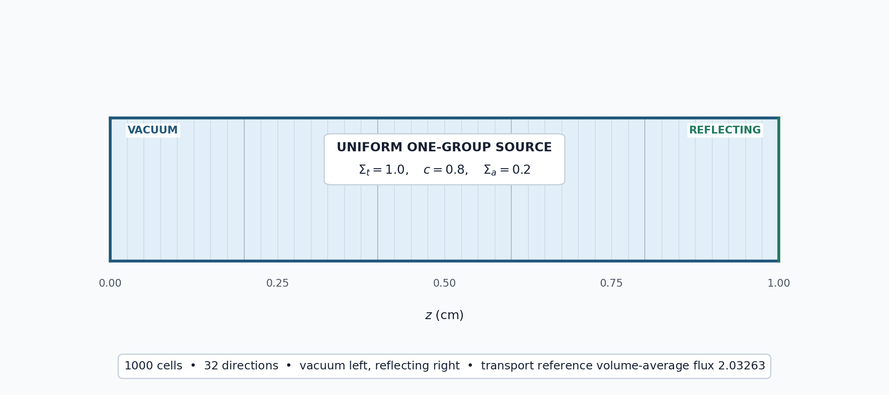

5.2.1. Comparing Inner Transport Solvers

This tutorial solves the same scattering problem with all four inner transport methods available in OpenSn, then compares their converged scalar fluxes, transport-sweep counts, and wall times. The left boundary (\(z=0\), zmin) is vacuum and the right boundary (\(z=1\) cm, zmax) is reflecting, so particles leak only through the left face.
5.2.1.1. Solve a common reference problem
The available choices are OpenSn’s explicit classic Richardson iteration and PETSc’s Richardson, GMRES, and BiCGStab methods. The physical model, convergence tolerance, and iteration limit are unchanged between runs. With leakage through one face, the infinite-medium result \(1/\Sigma_a=5\), which a slab reflecting on both faces would give, no longer applies. For isotropic scattering and a uniform isotropic source, a reflecting boundary acts as a mirror plane, so this slab is exactly one half of a 2 cm slab with vacuum on both sides. The reference is the exact (continuous-angle) integral-transport solution for that 2 cm slab, computed independently of OpenSn with a collision-probability method and extrapolated in cell width: an energy-summed, volume-averaged scalar flux of 2.0326268. A 1000-cell mesh and 32-direction quadrature make the timing comparison measurable while keeping the problem inexpensive. The timings remain illustrative rather than a general performance ranking.
[ ]:
from mpi4py import MPI
from pyopensn.aquad import GLProductQuadrature1DSlab
from pyopensn.context import Finalize
from pyopensn.mesh import OrthogonalMeshGenerator
from pyopensn.post import VolumePostprocessor
from pyopensn.solver import DiscreteOrdinatesProblem, SteadyStateSourceSolver
from pyopensn.source import VolumetricSource
from pyopensn.xs import MultiGroupXS
comm = MPI.COMM_WORLD
rank = comm.rank
methods = {
"classic_richardson": "Classic Richardson",
"petsc_richardson": "PETSc Richardson",
"petsc_gmres": "PETSc GMRES",
"petsc_bicgstab": "PETSc BiCGStab",
}
def solve_with(method):
mesh = OrthogonalMeshGenerator(node_sets=[[i / 1000.0 for i in range(1001)]]).Execute()
mesh.SetUniformBlockID(0)
xs = MultiGroupXS()
xs.CreateSimpleOneGroup(sigma_t=1.0, c=0.8)
source = VolumetricSource(block_ids=[0], group_strength=[1.0])
quadrature = GLProductQuadrature1DSlab(n_polar=32, scattering_order=0)
groupset = {
"groups_from_to": (0, 0),
"angular_quadrature": quadrature,
"inner_linear_method": method,
"l_abs_tol": 1.0e-8,
"l_max_its": 500,
}
if method == "petsc_gmres":
groupset["gmres_restart_interval"] = 30
problem = DiscreteOrdinatesProblem(
mesh=mesh,
num_groups=1,
groupsets=[groupset],
xs_map=[{"block_ids": [0], "xs": xs}],
volumetric_sources=[source],
boundary_conditions=[
{"name": "zmin", "type": "vacuum"},
{"name": "zmax", "type": "reflecting"},
],
options={"verbose_inner_iterations": False},
)
solver = SteadyStateSourceSolver(problem=problem)
comm.Barrier()
start = MPI.Wtime()
solver.Initialize()
solver.Execute()
comm.Barrier()
elapsed = comm.allreduce(MPI.Wtime() - start, op=MPI.MAX)
average = VolumePostprocessor(problem=problem, value_type="avg")
average.Execute()
total_average_flux = sum(average.GetValue()[0])
return total_average_flux, solver.GetNumSweeps(), elapsed
results = {method: solve_with(method) for method in methods}
5.2.1.2. Compare the converged solutions
Solver choice should affect the convergence path, not the converged physical solution. Classic Richardson is used as the flux-comparison baseline. Sweep counts are a machine-independent measure of transport work; wall times include solver initialization and execution and will vary by machine. Inner iteration logging is disabled so console output does not distort these short timings. Set verbose_inner_iterations=True to inspect the histories, remembering that the classic method uses a
pointwise flux-change test while the PETSc methods use a scaled residual.
[ ]:
reference_flux = results["classic_richardson"][0]
flux_differences = {
method: abs(flux - reference_flux)
for method, (flux, _, _) in results.items()
}
maximum_flux_difference = max(flux_differences.values())
# Exact integral-transport reference (collision-probability method).
transport_reference_flux = 2.0326267627
maximum_reference_error = max(
abs(flux - transport_reference_flux) / transport_reference_flux
for flux, _, _ in results.values()
)
if rank == 0:
for method, label in methods.items():
flux, sweeps, elapsed = results[method]
print(f"{label} total average flux={flux:.12e}")
print(f"{label} flux difference={flux_differences[method]:.12e}")
print(f"{label} sweeps={sweeps}")
print(f"{label} wall time (s)={elapsed:.6f}")
print(f"Maximum inner-solver flux difference={maximum_flux_difference:.12e}")
print(f"Maximum relative difference from transport reference={maximum_reference_error:.12e}")
assert maximum_flux_difference < 1.0e-5
assert maximum_reference_error < 2.0e-3
The fluxes and sweep counts are deterministic; the wall times are the median of five one-process runs:
Inner method |
Total average flux |
Difference from classic Richardson |
Transport sweeps |
Wall time (s) |
|---|---|---|---|---|
Classic Richardson |
2.031864211649 |
0 |
41 |
0.0495 |
PETSc Richardson |
2.031864211649 |
\(9.77\times10^{-15}\) |
42 |
0.0417 |
PETSc GMRES |
2.031864221082 |
\(9.43\times10^{-9}\) |
8 |
0.0087 |
PETSc BiCGStab |
2.031864221050 |
\(9.40\times10^{-9}\) |
10 |
0.0103 |
All four methods agree with classic Richardson within \(10^{-8}\). The four methods differ from the exact integral-transport reference by the same amount, 0.038%. That difference is the angular discretization error of the 32-direction quadrature, not an iteration error: refining only the quadrature reduces it by about a factor of four per doubling of directions (0.0093% with 64 directions, 0.0023% with 128, and 0.00058% with 256). The error is larger than it would be in a slab reflecting on both faces, because the angular flux is discontinuous at \(\mu=0\) on a vacuum face, which slows the convergence of Gauss quadrature.
With one reflecting face, convergence falls between that of a slab with vacuum on both faces and one reflecting on both faces. Reflected particles return to the slab, but those reaching the vacuum face are lost, so classic Richardson needs 41 sweeps. With the same settings it needs 28 with both faces vacuum and 107 with both faces reflecting. PETSc Richardson again performs essentially the same work, while GMRES and BiCGStab reduce the sweep count by approximately 80% and 76%. Mirroring the problem, with the reflecting boundary on the left face instead, gives the same fluxes and sweep counts, which confirms that OpenSn treats the reflecting boundary identically on either face. Wall time follows the sweep counts, but exact timings depend on the machine and should not be treated as a universal solver ranking.
5.2.1.3. Finalize (for Jupyter Notebook only)
In script mode, PyOpenSn handles finalization automatically. In a Jupyter kernel, finalize OpenSn before MPI.
[ ]:
if "opensn_console" not in globals():
from IPython import get_ipython
if get_ipython() is not None:
Finalize()
MPI.Finalize()